Everyone reads Part 1, Getting started. It explains how LODESTAR is put together, how to open it, and how saving works. After that, read only the part for your job.
Every page in the dashboard also has its own help. Press the ? button at the right end of the tab bar.
LODESTAR is the squadron's daily flying and ops planner. It replaces copying plans by hand between the department Excel files and the Ops Room. It has two pieces:
| File | What it holds |
|---|---|
| Flight_Ops_Planner_SUP1, _SUP2, _TACCO, _Loadmaster, _Pilot | One file per department: the crew list, each person's plan for every day (AM, PM, NIGHT and a whole-day WD row), currency, syllabus and the month totals. |
| Master_Planner | The squadron's flights, no-flying days, squadron events, alert states, flight codes and the Crew Matrix. It is the one true list of flights. |
| Duty_Roster | Who does BDO on each day, and which department does SDO on each day. |
| Ops_Room | The day board: tails, seats, ATD and ATA, flown or cancelled, Ops Adds, flying restrictions, down-chits and the ATOM currency export. |
The Master Planner plans the flights. Each department copies its flights into its own planner and puts its people on them. The Duty Planner hands out BDO and SDO days, and each department copies its days too. The Ops Room reads all of it and fills the seats on the day's board by itself. Nobody has to retype anything.
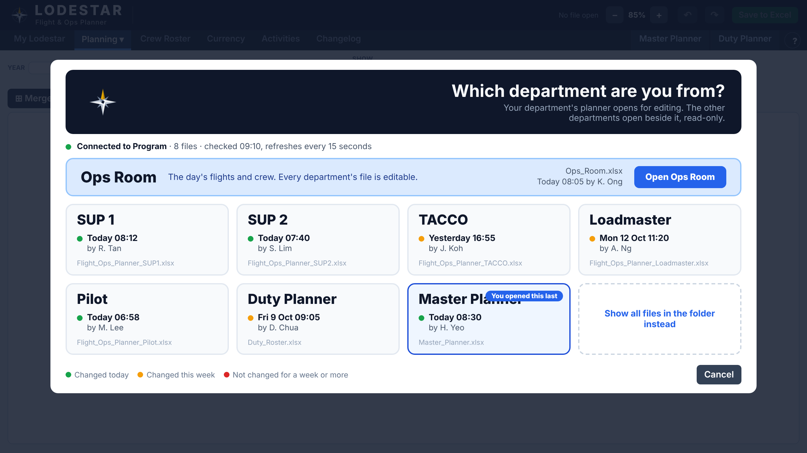
The dashboard and the Excel files are made as a matched set. If a yellow bar says a file uses an older layout or is newer than the dashboard, tell the LODESTAR maintainer. Do not keep planning in a mixed set.
| Tab | What it is |
|---|---|
| My Lodestar | Your own page: today's flight, your month, your currency and what changed. View only. |
| Planning ▾ | Planner (the month plan), Overview, Syllabus Tracking and Miscellaneous Notes (Part 2). |
| Crew Roster, Currency, Activities | Your department's crew list, currency checks and activity list (Part 2). |
| Changelog | Every saved change, with who and when (section 1.4). |
| Ops Room | The day board (Part 5). Departments see it view only. |
| Master Planner ▾ | The squadron calendar, Flight Codes and Crew Matrix (Part 3). |
| Duty Planner | BDO and SDO (Part 4). |
| ? | Help for the page you are on, with the meaning of its colours. |
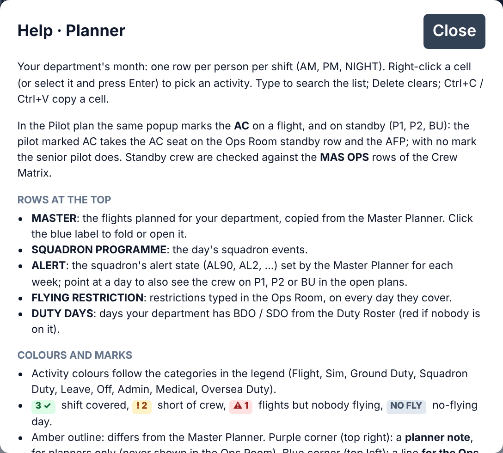
↶ and ↷, or Ctrl+Z and Ctrl+Y, undo and redo your recent changes (up to 40 steps).
Every save is written to a Change Log sheet in the file itself: when, who, what changed in words, and the value before and after. The Changelog tab shows the log of your own file, the Master Planner and the Ops Room. You can filter by person, file, day or text, and hover over a line to see the exact sheet and cell. Lines older than 90 days are dropped; SharePoint's version history keeps older copies of the file.
| You opened | You can change | You can see |
|---|---|---|
| Your department | Your department's plan, Crew Roster, Currency, Activities, Syllabus and Notes. | Every other file, view only. |
| Master Planner | Flights, no-flying days, squadron events, alert states, Flight Codes and the Crew Matrix. | Every other file, view only. |
| Duty Roster | The BDO and SDO roster and the duty crew lists. | Every other file, view only. |
| Ops Room | The day board. It can also up-chit a person in a department file. | Every file. |
On SharePoint this also follows the folder's edit rights. If you have no edit rights on a file, you cannot save it, even if you picked its card.
You can open any of the files in desktop Excel to read or print them. Prefer the dashboard for changes: it keeps the copies between files in step. If you do edit in Excel, close the file before others save from the dashboard.
| Question | Answer |
|---|---|
| Everything is locked (🔒) and I cannot click. | You opened another department's card. Click the LODESTAR logo and pick your own. |
| I can't see a change someone just made. | Wait 15 seconds, or press ⟳ Refresh (F5). |
| A yellow bar says "older layout". | The files and the dashboard don't match. Tell the LODESTAR maintainer. |
| Save to Excel stays green. | The save did not go through. Check you are still signed in to SharePoint and have edit rights, then press it again. |
| The page is too big for my screen. | Use − in the top bar to zoom out. |
Every department has its own file built from the same template, so this part works for all five departments. The screenshots show SUP 2.
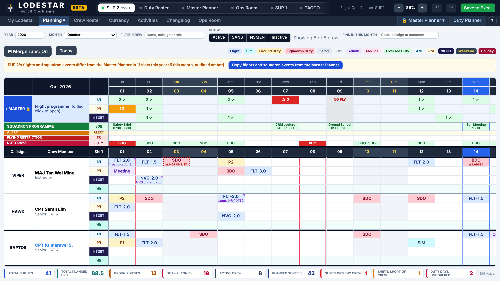
| Row | What it shows |
|---|---|
| MASTER 🔒 | The flights the Master Planner planned for your department, per shift. Folded, it shows how well each shift is crewed. Click the blue label to open it and see each flight's code and time. |
| SQUADRON PROGRAMME | The day's squadron events (meetings, lectures, ceremonies) that your department attends. |
| ALERT | The squadron's alert state (for example AL90 or AL2), set by the Master Planner for each week. Point at a day to see who is on P1, P2 or BU. |
| FLYING RESTRICTION | Restrictions typed in the Ops Room, on every day they cover. |
| DUTY DAYS | Your department's BDO and SDO days from the Duty Roster. Red means nobody is planned on it yet. |
Each person has four rows: AM, PM, NIGHT and WD (whole day). Put flights and shift duties on AM, PM or NIGHT. Put whole-day items such as BDO, courses and admin on the WD row. Regular crew are at the top; SANS and NSmen are always at the bottom.
The strip along the bottom adds up the month: total flights, planned hours, ground duties, duty days, active crew, planned sorties, and the problem counts (shifts with no crew, shifts short of crew, duty days uncovered). ⌨ Keys lists the keyboard shortcuts.
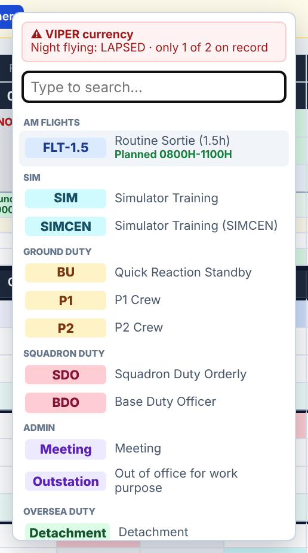
At the top of the list you may see a warning about this person, for example a lapsed currency. It only warns.
Only put someone on a flight that is on the MASTER row for that shift. That is what the Ops Room uses to seat them.
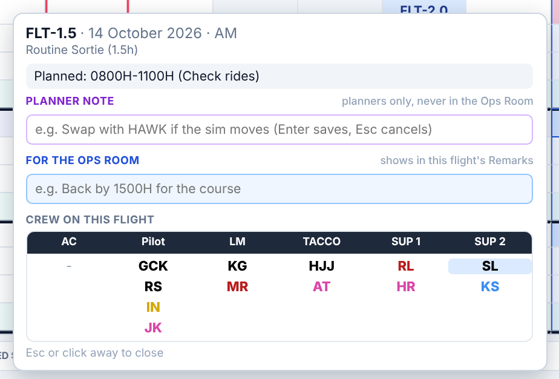
Click (left-click) a cell to open its card. It shows what is planned and has two separate notes:
| Box | Who sees it | Mark on the cell |
|---|---|---|
| Planner note | Planners only. Never shown in the Ops Room. Use it for reminders, for example "Swap with HAWK if the sim moves". | Purple corner, top right |
| For the Ops Room | Shown in that flight's Remarks on the Ops Room board (not on the AFP). Use it for things the duty staff must know, for example "Back by 1500H for the course". | Blue corner, top left |
Type in a box and press Enter to save it, or Esc to cancel. Clear the box to remove the note.
The Master Planner plans the squadron's flights and squadron events. Your planner does not change by itself when they do. Instead:
You only get flights whose crew tags include your department. If you think a flight is missing, ask the Master Planner to check the tags. New flight codes reach your Activities list by themselves the next time you save.
When the Master Planner gives a flight 2 or 3 sorties, the MASTER cell says 2 SORTIES. By default everyone you put on it is crew on every sortie. To change that for a person, right-click their cell and use On this flight: Crew, Pax or Not on, for each flight. The cell then shows a tag such as PAX FLIGHT 1/2 or FLIGHT 1/2 ONLY, and the Ops Room seats them on the right rows.
| Mark | Meaning |
|---|---|
| 3 ✓ | On the MASTER row: the shift is covered. The number is the planned sorties. |
| ! 2 | Short of crew: some flights in the shift have fewer of your people than needed. |
| ⚠ 1 | There are flights in the shift but nobody from your department is on them. |
| NO FLY | A no-flying day set by the Master Planner. |
| Amber outline | Differs from the Master Planner (section 2.4). |
| Red dashed outline, "NOT ON LIST" | The person is on a duty (BDO or SDO) but is not on the crew list for that duty (Part 4). |
| REST | The person flies 5 or more days in a row. |
| DOWN | Down-chitted after MC: not cleared to fly. The down-chit days are striped red, and a flight on them gets a red box. Click DOWN, or Up-chit… in the cell list, to up-chit. |
| "LAPSED", "NOT CURRENT", red corner | A currency has expired before this flight (section 2.8). It only warns. |
| Purple mark on the WD row | A mission currency expires that day (from ATOM). |
| "CREW MATRIX" (amber) | The planned crew on that flight or standby does not fit the Crew Matrix for its mission. It only warns. |
| Struck-through flight | Cancelled in the Ops Room. |
| Amber underline | A past flight that the Ops Room has not closed yet (not marked flown or cancelled). |
| Columns | Blue: today. Dark: weekend. Red: public holiday. |
The coloured chips above the grid (Flight, Sim, Ground Duty, Squadron Duty, Leave, Off, Admin, Medical, Oversea Duty) are the legend for the activity colours.
In the Pilot plan, the right-click list of a flight cell also lets you mark the AC (aircraft captain). The pilot marked AC takes the Captain seat on the Ops Room board and on the AFP; with no mark, the most senior pilot does. The same works on standby (P1, P2, BU). Any department can mark a person as Pax on a flight: they ride along but are not crew.
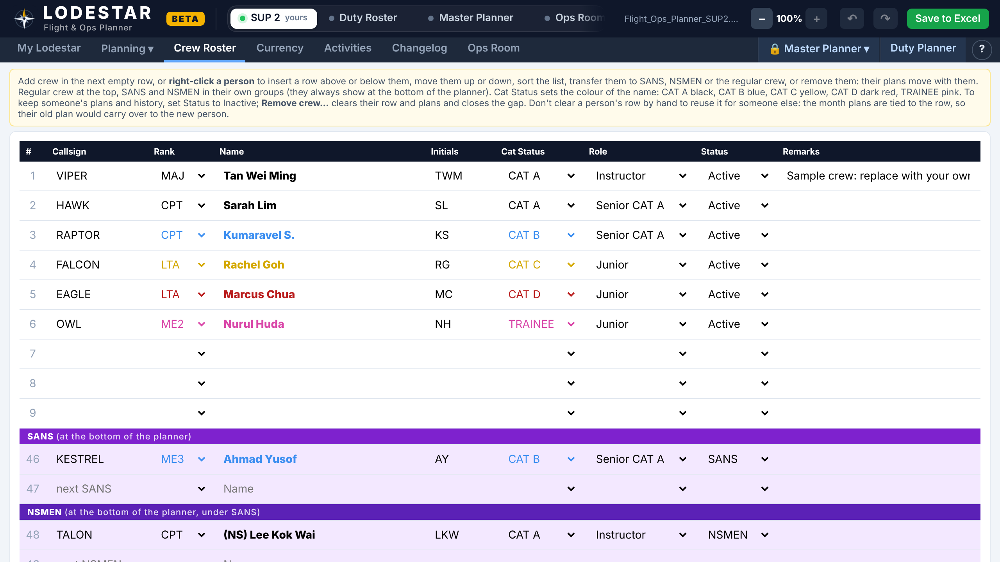
Your department's crew list: callsign, rank, name, initials, Cat Status, role, status and remarks. Changes here show on every tab. The order here is the order on the Planner, the Ops Room and in Excel.
To keep their history, set Status to Inactive. Remove crew… clears their row and plans and closes the gap. Never clear a person's row by hand to reuse it for someone else: the plans are tied to the row, so the old plan would carry over to the new person.
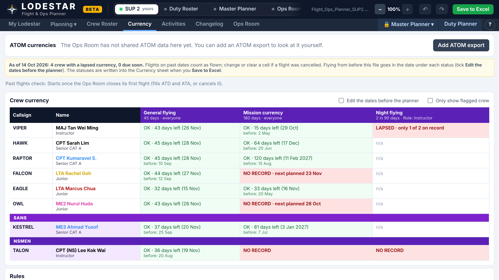
ATOM is the truth. Once a day the Ops Room adds the ATOM export and publishes it to everyone (Part 5). LODESTAR then shows for each person the Day Capt, Day Curr, IRT, Night Capt and Night Curr dates, the month's clocked hours and the mission currencies. Nothing else from ATOM is kept, and no names, only the initials.
Below the ATOM table are the older per-rule checks worked out from the plan. Right-click a rule to switch it off or remove it. A past planned flight counts as flown for these rules, so any flight in the last 45 days that the Ops Room has not closed is listed under the note and underlined amber on the Planner.
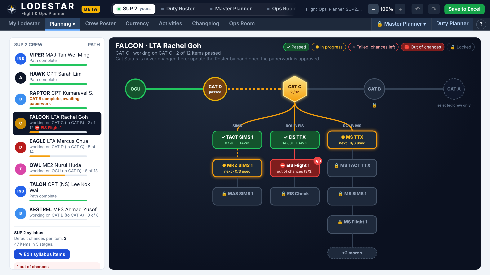
Under Planning ▾. Each person's training is shown as a path of stages along the top: OCU, CAT D, CAT C, CAT B, CAT A. Under the stage they are working on you see the tracks side by side, then the Check once the tracks are passed.
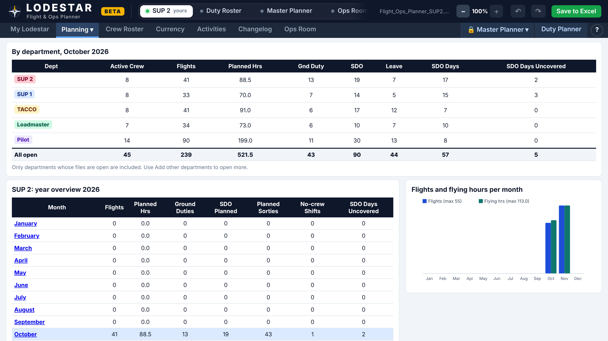
| Problem | What to do |
|---|---|
| A flight is on the Master Planner but not on my MASTER row. | Press the copy button (section 2.4). If it is still missing, the flight's crew tags do not include your department: ask the Master Planner. |
| A flight code is missing from my list. | Save once. New codes from the Master Planner are added on save. |
| Someone shows "NOT ON LIST" on a duty. | Ask the Duty Planner to add them to that duty's crew list, or plan someone who is on it. |
| Currency says "Names to fix". | Make the person's Initials on the Crew Roster the same as their name in ATOM. |
| The Ops Room doesn't show my person in the seat. | Check they are on the flight code in the right shift, not on the WD row, and not marked Pax or down-chitted. |
| I put a whole-day item on AM. | Move it to the WD row. Whole-day items belong there. |
The Master Planner is the one list of flights for 121 SQN. Every department copies its flights from it, the Ops Room builds the day's board from it, and crew see it on their own pages. Department planners can look at the calendar but cannot change it.
| Who | What they get |
|---|---|
| Department planners | Their flights and squadron events on the MASTER and SQUADRON PROGRAMME rows, after they press the copy button. A department only gets a flight if its crew tags include it. New flight codes reach their Activities list by themselves the next time they save. |
| Ops Room | The day's flight board, one row per sortie, with the seats filled from the department plans. No-flying days and flying restrictions show there too. |
| Crew | Their flights on My Lodestar. |
| Outside offices | A clean Excel copy of the flights and planned hours, made with Export… (section 3.12). |
| Word | Meaning |
|---|---|
| Flight code | The short name of a kind of flight, for example FLT-2.0, NVG-2.0 or MAS TRG. Each code has a description, default crew and a Mission Type. |
| Shift | AM, PM or NIGHT. The start time decides it: before 1200H is AM, before 1800H is PM, later is NIGHT. |
| Crew tags | P Pilot, L Loadmaster, T TACCO, S1 SUP 1, S2 SUP 2. On a flight, no tags means every department. |
| Sorties | How many sorties one flight is split into. A normal flight is 1. A running change is 2 or 3. |
| Planned hours | Worked out from the flight's time range. 0830H-1030H is 2.0 hours. ATOM stays the record of the hours actually flown. |
Pick Master Planner on the department screen (Part 1). The calendar is under the Master Planner ▾ tab at the right of the tab bar, which has three pages:
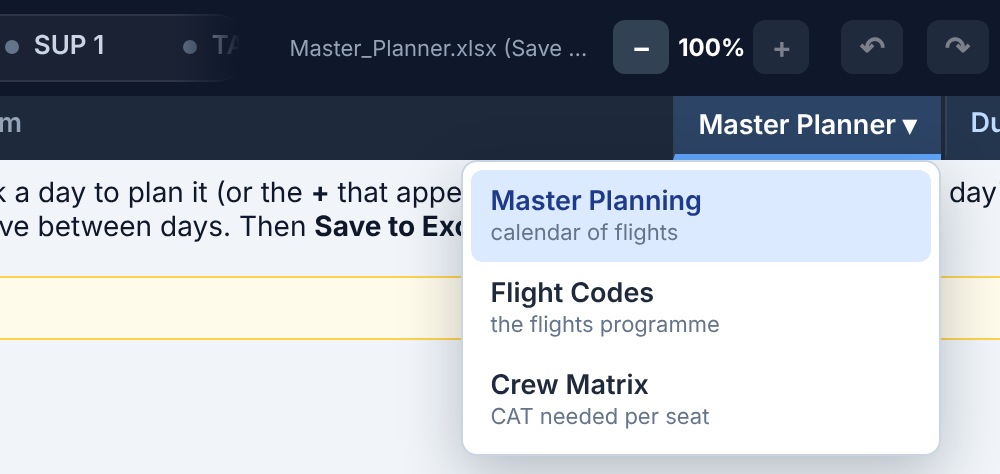
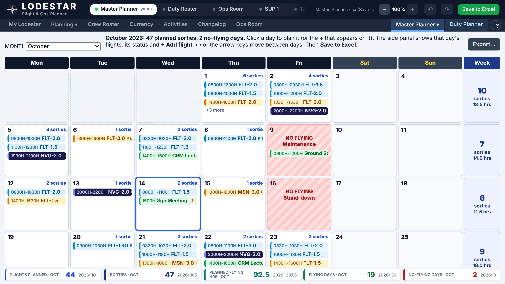
| What you see | What it means |
|---|---|
| 0830H-1030H FLT-2.0 PM NIGHT | A flight: its time range and flight code, in its shift colour. Crew tags follow when the flight has its own crew. |
| 1500H Sqn Meeting | A squadron event. A red ! on it means nobody was chosen to attend (section 3.7). |
| NO FLYING · Maintenance | A no-flying day and its reason (section 3.6). |
| RESTRICTION | A flying restriction covers this day (section 3.9). |
| "3 sorties", "+3 more", blue outline | Sorties planned that day; more items than fit (click the day); today. |
The strip along the bottom shows this month and the whole year: flights planned, sorties, planned flying hours, flying days and no-flying days. Flights on a no-flying day are not counted. Hover over a chip to see its full details.
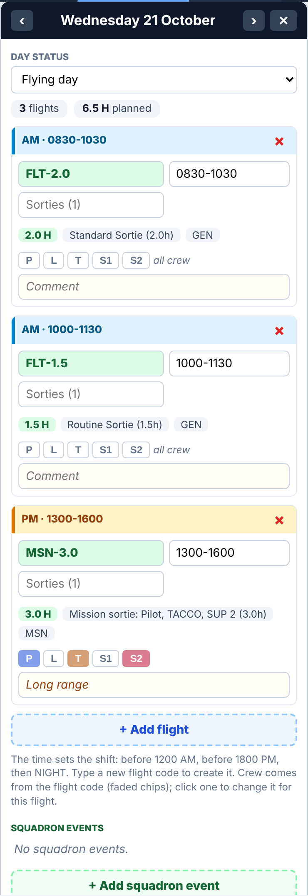
Click a day. It opens in a panel on the right. ‹ › or the arrow keys move a day; ✕ or Esc closes it.
To remove a flight, press the red ✕ in its header.
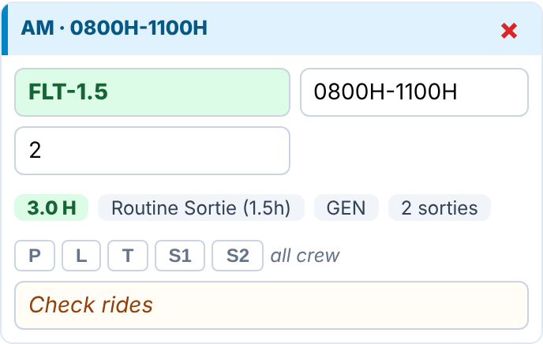
A running change is one flight with one time range covering the whole thing and 2 or 3 in the Sorties box. Do not enter it as two flights.
Set the usual crew once on the flight code (section 3.10), and only change tags on the odd flight that differs.
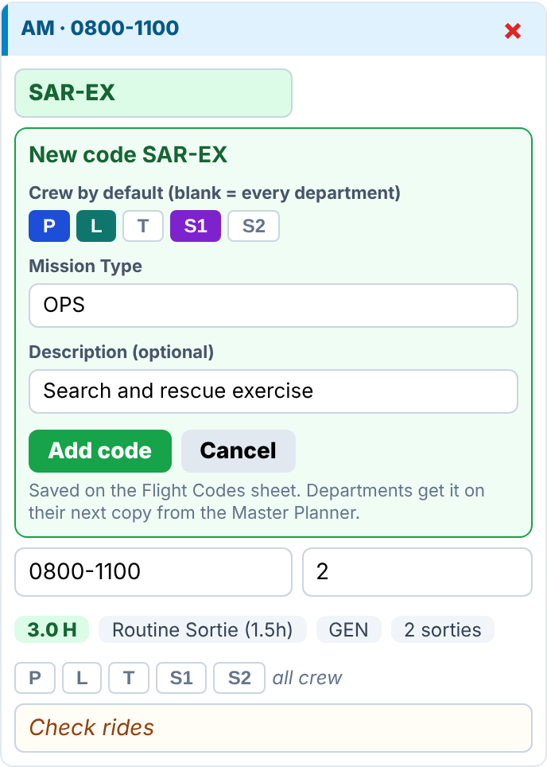
Hours come from the time range, so one code covers every length of the same kind of flight: one MAS code can replace MAS3, MAS4 and MAS6.
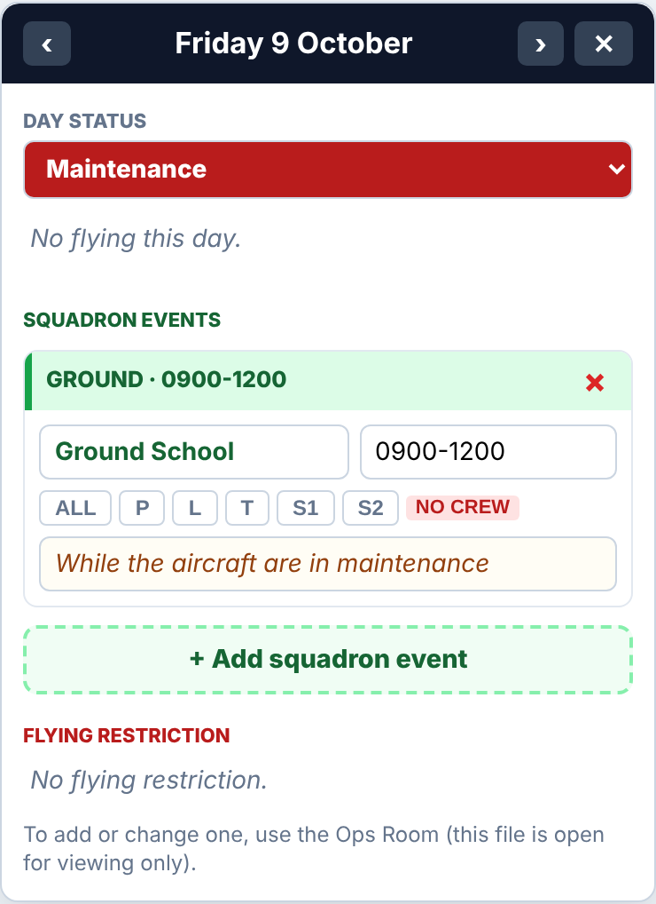
Use the Day status box at the top of the day panel. Choose a reason such as Maintenance, Stand-down or Public Holiday. The calendar day is striped with the reason.
Ground events for the squadron: meetings, ceremonies, lectures, sports. They show as green chips on the calendar and on each department's SQUADRON PROGRAMME row.
A new event starts with nobody chosen and shows a red NO CREW. Unlike a flight, an event with no tags does not mean everyone: no department gets it until you pick ALL or the tags.
The squadron's alert state changes from week to week (for example AL90 one week, AL2 the next). You set it in the Alert state section of the day panel:
A single day set inside a week overrides the week for that day. Departments see the state on their ALERT row.
A flying restriction is a short notice for a range of dates, for example "No low flying in Area Echo". It shows as a red banner on the Ops Room, on the departments' FLYING RESTRICTION row, and as a RESTRICTION tag on the calendar.
Master Planner ▾ → Flight Codes. Every flight code the squadron uses, one per row.
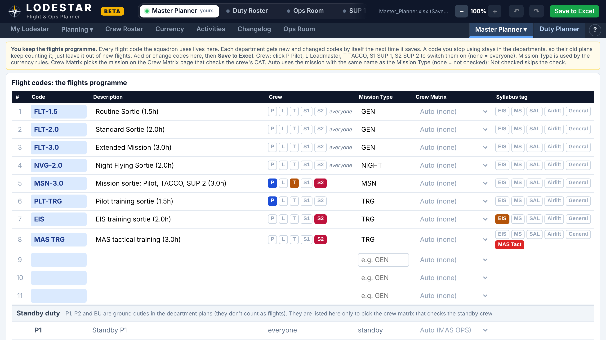
| Column | What to type |
|---|---|
| Code | The short name used on the calendar. Keep each code unique. |
| Description | A plain description. Departments see it in their planner. |
| Crew | The default crew tags, for example P T S2. Blank means every department. |
| Mission Type | For example GEN, OPS or MAS TRG. Used by the currency rules and, by default, the Crew Matrix. |
| Crew Matrix | Which Crew Matrix mission checks this code. Auto uses the mission with the same name as the Mission Type; Not checked switches the check off. |
| Syllabus tag | Optional. Picks the syllabus track the departments are offered for this code. |
Master Planner ▾ → Crew Matrix. The lowest CAT allowed in each seat (AC, Co-pilot, LM, TACCO, SUP 1, SUP 2) for each mission.
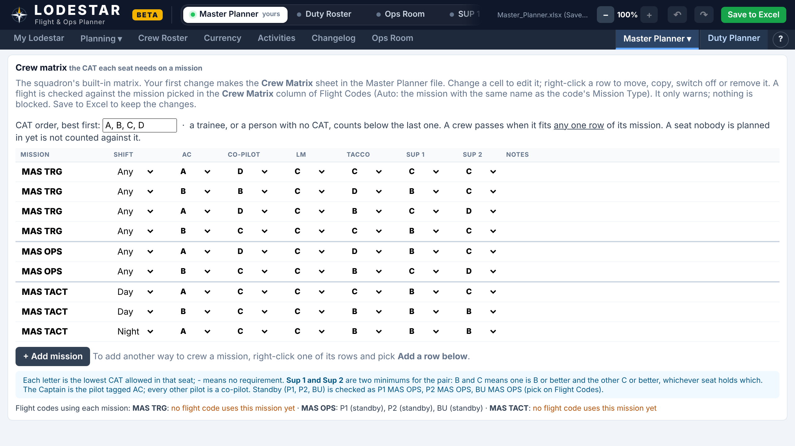
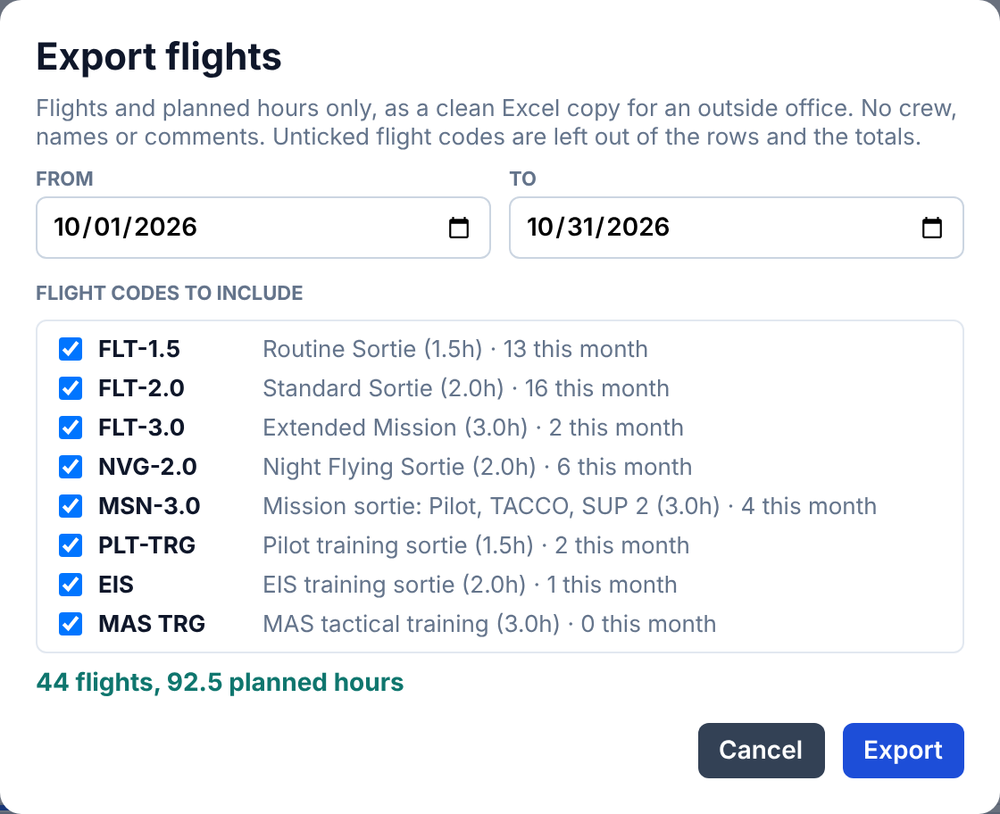
Export… at the top right of Master Planning gives an outside office a clean Excel copy of the flight programme.
The file has one Calendar sheet: each month as a calendar with every flight and its hours, the day and week totals, no-flying days with their reason, and a month total. It prints on landscape A4, one page wide.
No crew, names, callsigns or comments. Only dates, times, flight codes and planned hours.
| Who | When |
|---|---|
| Anyone with the dashboard open | Within about 15 seconds of your save. |
| Department planners | An amber note says their flights differ, with the changed slots outlined. Their plan changes when they press the copy button. |
| Ops Room | Straight away on the day's board. |
| Problem | What to do |
|---|---|
| The calendar shows a padlock. | You opened another card. Click the LODESTAR logo and pick Master Planner. If it is still locked, ask the folder owner for edit rights to Master_Planner.xlsx. |
| A flight shows No end time or Check time. | Type a full range such as 0830-1030. |
| A flight is in the wrong shift. | The start time sets the shift. Correct the start time. |
| A department cannot see a flight. | Check its crew tag is on (or no tags at all). Then the department presses its copy button. |
| A squadron event shows NO CREW. | Click ALL or the tags of the departments that attend. |
| A flight does not count in the totals. | The day is set to no flying. |
| The Crew Matrix does not check a flight. | On Flight Codes, set the code's Crew Matrix column, or make its Mission Type match a mission. |
| I cannot remove a flight code. | A flight this year still uses it. Switch it off instead. |
| "The Flights sheet is full". | The file holds 1,000 flights a year. Tell the LODESTAR maintainer. |
| Duty | The Duty Roster says | The department then |
|---|---|---|
| BDO | The person on duty each day, picked from the BDO crew list. A blank day means no BDO is needed. | Copies the days. BDO goes on that person's WD row. |
| SDO | The department on duty each day. | Copies the days and chooses who in the department does it, by putting SDO on that person's row. |
The Duty Roster only changes the Duty_Roster.xlsx file. Nothing in a department's plan changes until that department copies its days.
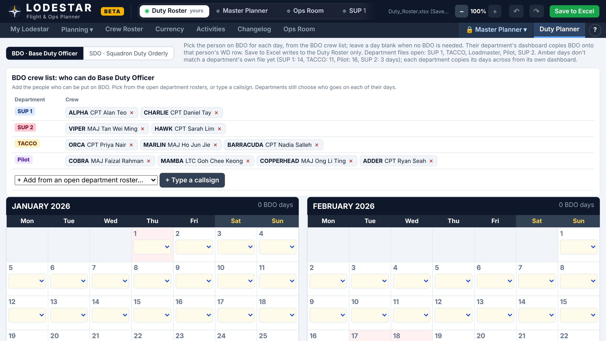
At the top of each duty is its crew list: who may be put on that duty, grouped by department.
If a department plans the duty for someone who is not on the list, their cell is marked NOT ON LIST with a red dashed outline.
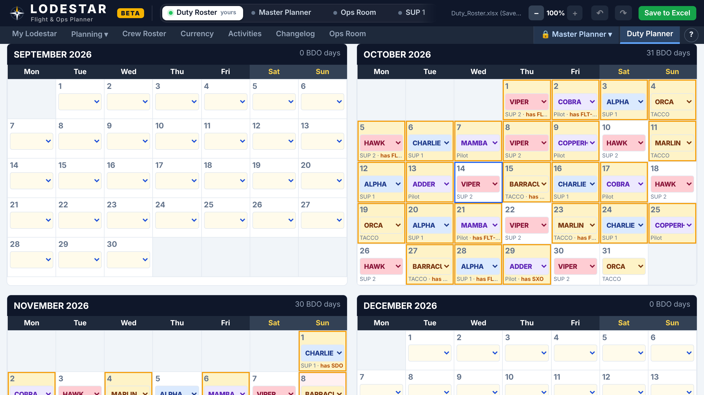
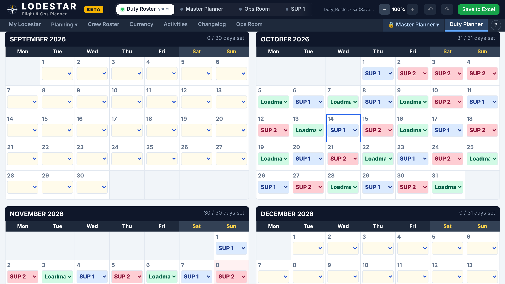
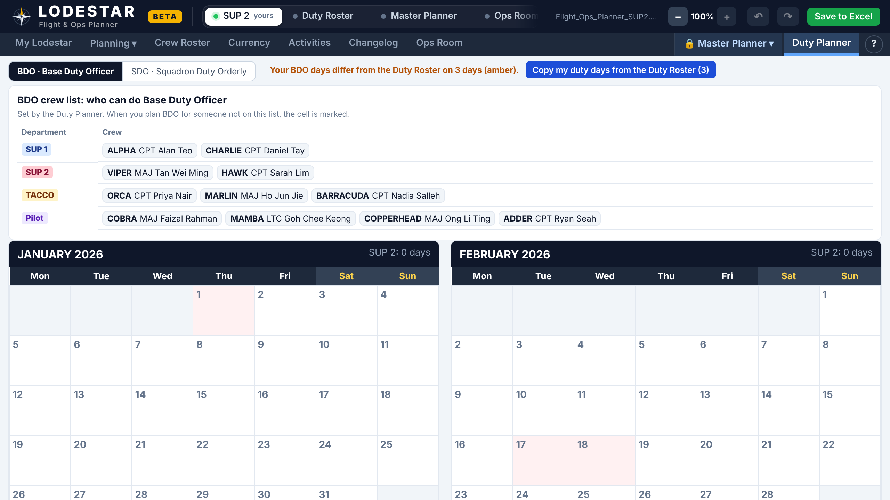
A department planner opens the Duty Planner tab from their own file. They can see the whole roster but cannot change it.
The Ops Room duty strip shows the BDO and SDO for the day from these plans. Before a department copies its BDO days, it shows the roster's person, for example "MAMBA (Pilot)".
| Problem | What to do |
|---|---|
| A person is missing from the BDO drop-down. | Add them to the BDO crew list (section 4.2). |
| Days stay amber. | That department has not copied its duty days yet. Ask its planner to press the copy button. |
| A department's SDO day stays red on their Planner. | Nobody in the department has SDO on that day. The department planner must put someone on it. |
| A person shows "not in your Crew Roster". | The callsign on the BDO list does not match anyone in that department's Crew Roster. Check the callsign. |
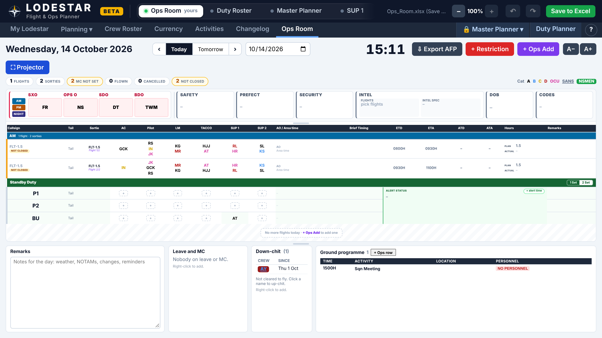
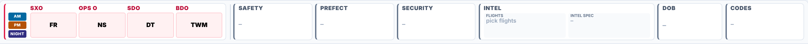
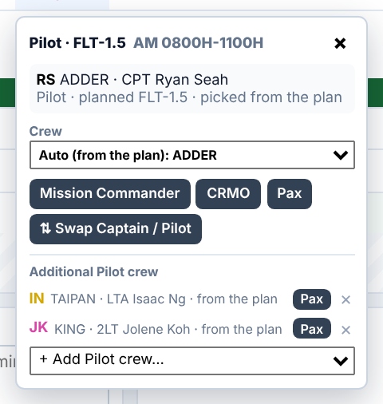
The seats fill themselves from the department plans. The pilot marked AC (or else the senior pilot) takes the AC seat. Click a seat to:
A DOWN seat means that person is down-chitted (MC). Click it to up-chit them or pick someone else.
Click a text cell (Callsign, Tail, AO / Area time, Brief Timing, Remarks) to type in it.
Every flight should end the day FLOWN or CANCELLED. The pill under the callsign shows the status:
| Status | Meaning |
|---|---|
| PLANNED | Planned. It counts as flown once ATD and ATA are filled. |
| DUE | Within 2 hours of ETD. |
| FLOWN | ATD and ATA are filled. |
| CANCELLED | Cancelled, with the reason. |
| NOT CLOSED | The flight is in the past and still open: fill ATD and ATA if it flew, or cancel it. |
| OPS ADD | An ad hoc flight added in the Ops Room (section 5.6). |
The departments' currency checks count a past flight as flown until the Ops Room closes it. An open flight shows amber on their Planner and Currency pages.
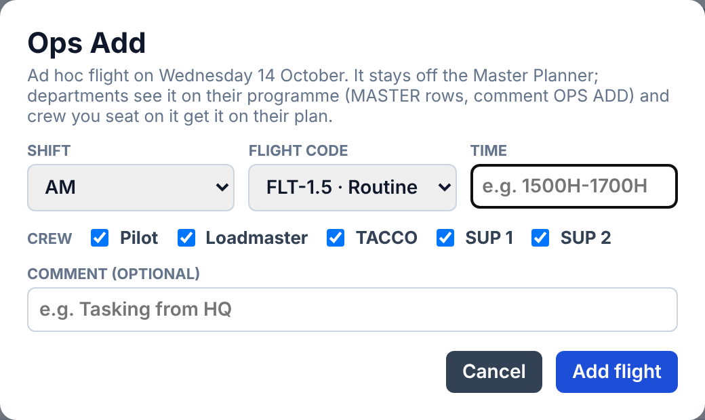
+ Ops Add adds an ad hoc flight for the day: pick the shift, the flight code, the time, the departments that fly and an optional comment, then Add flight.
| Card | What it does |
|---|---|
| Remarks | Notes for the day: weather, NOTAMs, changes, reminders. |
| Leave and MC | Who is on leave, off or on MC today, from the plans. Right-click to add. |
| Down-chit | Who is not cleared to fly. Click a name to up-chit them. Right-click to add a down-chit. Up-chitting saves into that person's department file as well. |
| Ground programme | The day's squadron events and the Ops Room's own rows. See section 5.8. |
| Area & Codes | The day's areas, shown when they are filled in. |
The Ground programme card under the board is the day's list of ground activities: it goes on the AFP and on the screen in the Ops Room. The Ops Room manages it.
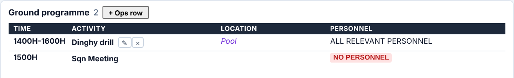
| Row | Where it comes from |
|---|---|
| Squadron events | Planned by the Master Planner (meetings, lectures, ceremonies). They show by themselves, with the event's time, place and who attends. NO PERSONNEL means the Master Planner did not choose who attends. |
| Ops rows | Added here by the Ops Room with + Ops row, for anything else the squadron should see: a dinghy drill, a visit, a course. |
The rows are in time order: clock times first, then AM, PM and NIGHT, then whole day, then items running on to a later day.
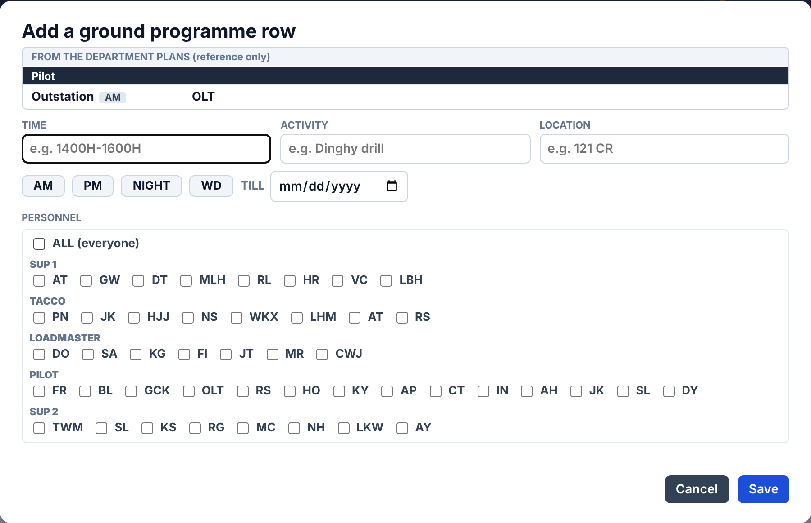
The From the department plans box shows what the departments have planned for the day (for example a person on Outstation). It is there to help you fill the row; it is not added by itself.
Ops rows and changes are kept in the Ops Room file, so everyone sees them within about 15 seconds. They go on the AFP export (section 5.10).
+ Restriction adds a short notice for a range of dates, for example "No low flying in Area Echo". It shows as a red banner on the board, on the departments' FLYING RESTRICTION row and on the Master Planner calendar. On the banner, ✎ changes it and ✕ removes it.
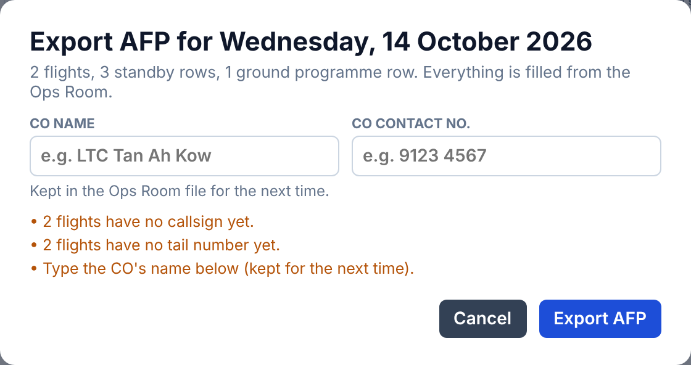
⇩ Export AFP fills the squadron AFP format for the day on screen and downloads it as an Excel file.
The Ops Room shares the day's ATOM currency data with the whole squadron:
Only the currency dates, the month's clocked hours and the mission currencies are kept, matched by initials. No names are stored. A banner turns amber when the data is 7 days old and red after 30, so do this once a day.
| Problem | What to do |
|---|---|
| "Not open, so their seats can't be filled: SUP 2". | That department's file did not open. Press ⟳ Refresh. If it stays, check the file is in the Program folder. |
| A seat is empty (dashed +). | Nobody from that department is planned on the flight. Ask the department, or click the seat and pick someone. |
| The wrong pilot is in the AC seat. | Click the seat and use Swap Captain / Pilot, or ask the Pilot planner to mark the AC. |
| A flight shows NOT CLOSED. | Fill ATD and ATA, or cancel it with a reason. |
| The ground programme shows NO PERSONNEL. | The Master Planner did not choose who attends the event. Ask them, or change the line with the pencil. |
| My change to a seat didn't stick. | Check Save to Excel is not still green. The Ops Room file needs edit rights. |
The ? button at the right end of the tab bar explains the Ops Room's colours and tools.